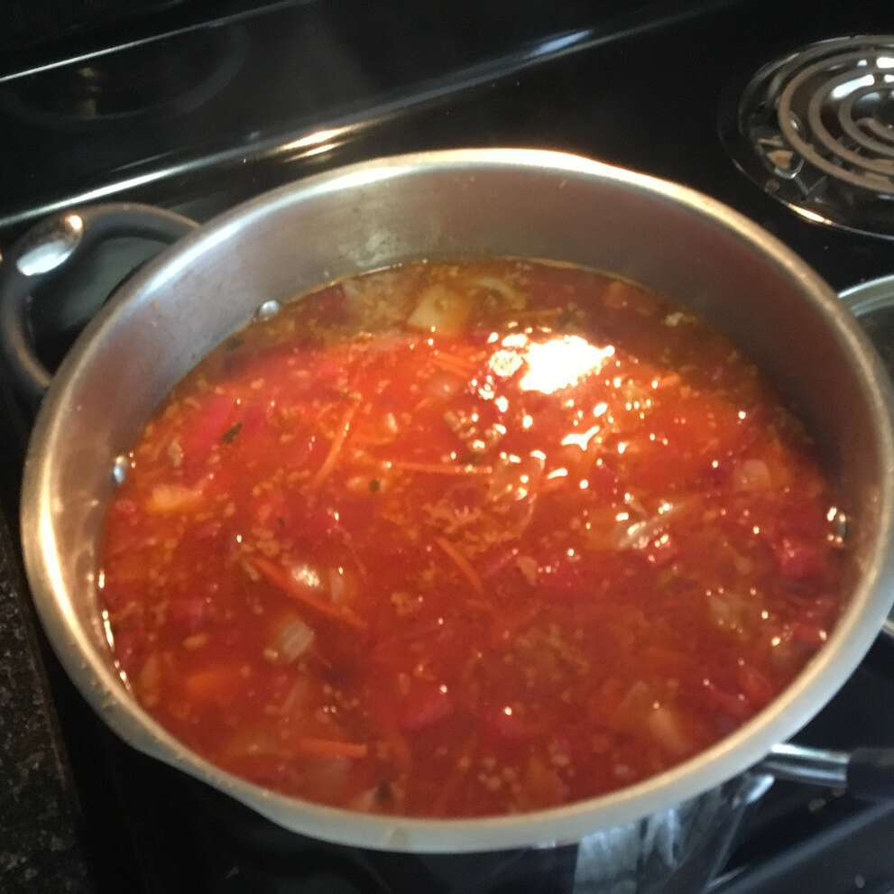

Ukrainian Red Borscht Soup

Ukrainian Red Borscht Soup
This recipe is a fundamental part of Ukrainian culture. It's an authentic
beet soup you'll never forget. For the vegetarian-style just omit the sausage.
Ingredients
- 1 (16 ounce) package pork sausage
- 3 medium beets, peeled and shredded
- 3 carrots, peeled and shredded
- 3 medium baking potatoes, peeled and cubed
- 1 tablespoon vegetable oil
- 1 medium onion, chopped
- 1 (6 ounce) can tomato paste
- 3/4 cup water
- 1/2 medium head cabbage, cored and shredded
- 1 (8 ounce) can diced tomatoes, drained
- 3 cloves garlic, minced
- salt and pepper to taste
- 1 teaspoon white sugar, or to taste
- 1/2 cup sour cream, for topping
- 1 tablespoon fresh parsley, chopped, for garnish
Directions
- Crumble the sausage into a skillet over medium-high heat. Cook and stir
until no longer pink. Remove from the heat and set aside.
- Fill a large pot halfway with water (about 2 quarts), bring to a boil.
Add the sausage and cover the pot. Return to a boil. Add the beets and cook until
they have lost their color. Add the carrots and potatoes, cook until tender, about
15 minutes. Add the cabbage and the can of diced tomatoes.
- Heat the oil in a skillet over medium heat. Add the onion, cook till tender.
Stir in the tomato paste and water until well blended. Transfer to the pot. Add
the raw garlic to the soup, cover and turn off the heat. Let stand for 5 minutes. Taste
and season with salt, pepper, and sugar.